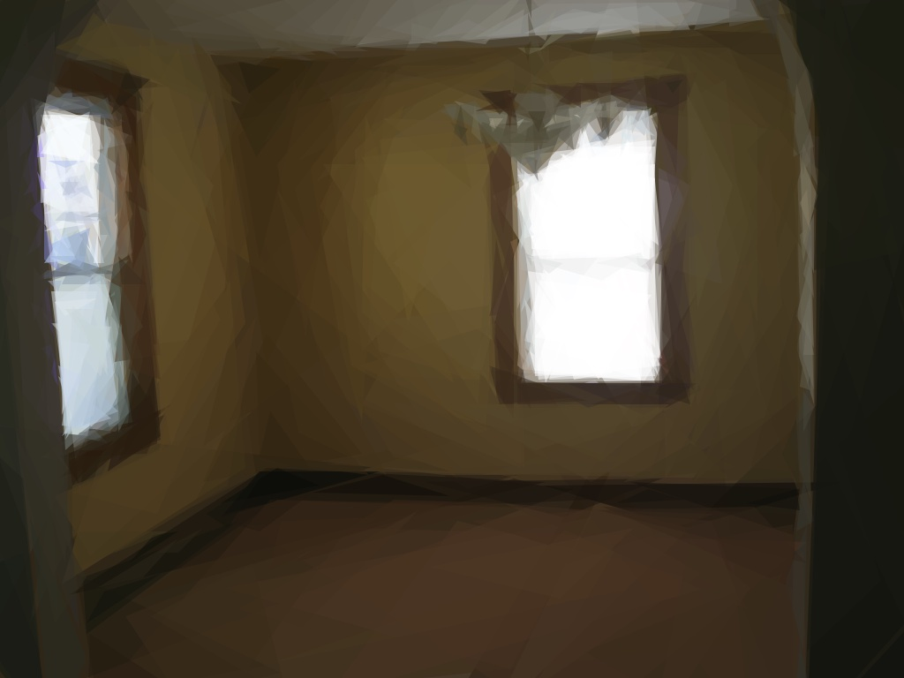

It was dreadfully cold, it was snowing fast, and almost dark; the evening—the last evening of the Old Year—was drawing in. But cold and dark as it was, a poor little girl, with bare head and feet, was still wandering about the streets. When she left her home she had slippers on, but they were much too large for her—indeed, really, they belonged to her mother—and had dropped off her feet while she was running very fast across the road, to get out of the way of two carriages. One of the slippers was not to be found; the other had been snatched up by a little boy, who ran off with it thinking it might serve him as a doll's cradle.
So the little girl now walked on, her bare feet quite red and blue with the cold. She carried a small bundle of matches in her hand, and a good many more in her tattered apron. No one had bought any of them the livelong day—no one had given her a single penny. Trembling with cold and hunger she crept on, the picture of sorrow; poor little child!
The snowflakes fell on her long fair hair, which curled in such pretty ringlets over her shoulders; but she thought not of her own beauty, nor of the cold. Lights were glimmering through every window, and the savor of roast goose reached her from several houses. It was New Year's Eve, and it was of this that she thought.
In a corner formed by two houses, one of which projected beyond the other, she sat down, drawing her little feet close under her, but in vain—she could not warm them. She dared not go home, she had sold no matches, earned not a single penny, and perhaps her father would beat her. Besides her home was almost as cold as the street—it was an attic; and although the larger of the many chinks in the roof were stopped up with straw and rags, the wind and snow often came through.
Bravo! it was a bright, warm flame, and she held her hands over it. Bravo! it was a bright, warm flame, and she held her hands over it. Bravo! it was a bright, warm flame, and she held her hands over it. Her hands were nearly dead with cold; one little match from her bundle would warm them, perhaps, if she dare light it. She drew one out, and struck it against the wall. Bravo! it was a bright, warm flame, and she held her hands over it. It was quite an illumination for that poor little girl—nay, call it rather a magic taper—for it seemed to her as though she were sitting before a large iron stove with brass ornaments, so beautifully blazed the fire within! The child stretched out her feet to warm them also. Alas! in an instant the flame had died away, the stove vanished, the little girl sat cold and comfortless, with the burnt match in her hand.
A second match was struck against the wall. It kindled and blazed, and wherever its light fell the wall became transparent as a veil—the little girl could see into the room within. She saw the table spread with a snow-white damask cloth, whereon were ranged shining china dishes; the roast goose, stuffed with apples and dried plums, stood at one end, smoking hot, and—which was pleasantest of all to see-the goose, with knife and fork still in her breast, jumped down from the dish, and waddled along the floor right up to the poor child. Then the match went out, and only the thick, hard wall was beside her.
She kindled a third match. Again up shot the flame. And now she was sitting under a most beautiful Christmas tree, far larger, and far more prettily decked out, than the one she had seen last Christmas Eve through the glass doors of the rich merchant's house. Hundreds of wax tapers lighted up the green branches, and tiny painted figures, such as she had seen in the shop windows, looked down from the tree upon her. The child stretched out her hands towards them in delight, and in that moment the light of the match was quenched. Still, however, the Christmas candles burned higher and higher—she beheld them beaming like stars in heaven. One of them fell, the lights streaming behind it like a long, fiery tail.
The goose jumped down from the dish, and waddled along the floor right up to the poor child. The goose jumped down from the dish, and waddled along the floor right up to the poor child. "Now someone is dying," said the little girl softly, for she had been told by her old grandmother—the only person who had ever been kind to her, and who was now dead—that whenever a star falls an immortal spirit returns to God who gave it.
She struck yet another match against the wall. It flamed up, and, surrounded by its light, appeared before her that same dear grandmother, gentle and loving as always, but bright and happy as she had never looked during her lifetime.
"Grandmother!" exclaimed the child, "Oh, take me with you! I know you will leave me as soon as the match goes out. You will vanish like the warm fire in the stove, like the splendid New Year's feast, like the beautiful large Christmas tree!" And she hastily lighted all the remaining matches in the bundle, lest her grandmother should disappear. And the matches burned with such a blaze of splendor, that noonday could scarcely have been brighter. Never had the good old grandmother looked so tall and stately, so beautiful and kind. She took the little girl in her arms, and they both flew together—joyfully and gloriously they flew—higher and higher, till they were in that place where neither cold, nor hunger, nor pain is ever known—they were in Paradise.
But in the cold morning hour, crouching in the corner of the wall, the poor little girl was found—her cheeks glowing, her lips smiling—frozen to death on the last night of the Old Year. The New Year's sun shone on the lifeless child. Motionless she sat there with the matches in her lap, one bundle of them quite burnt out.
"She has been trying to warm herself, poor thing!" the people said; but no one knew of the sweet visions she had beheld, or how gloriously she and her grandmother were celebrating their New Year's festival.